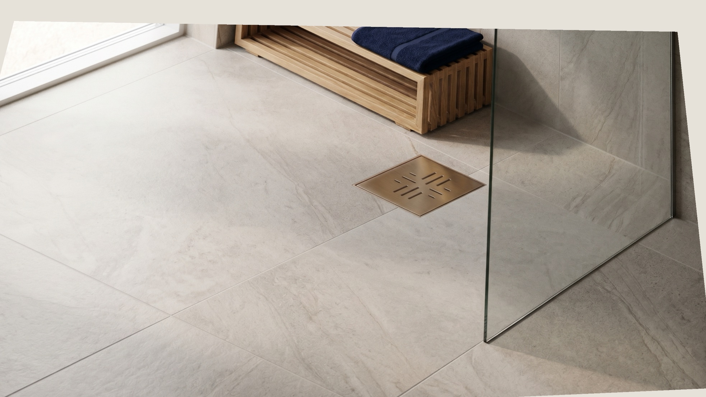
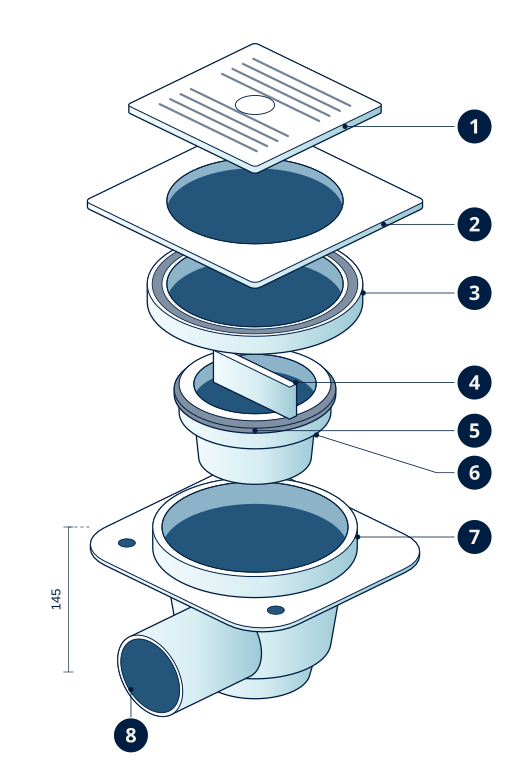
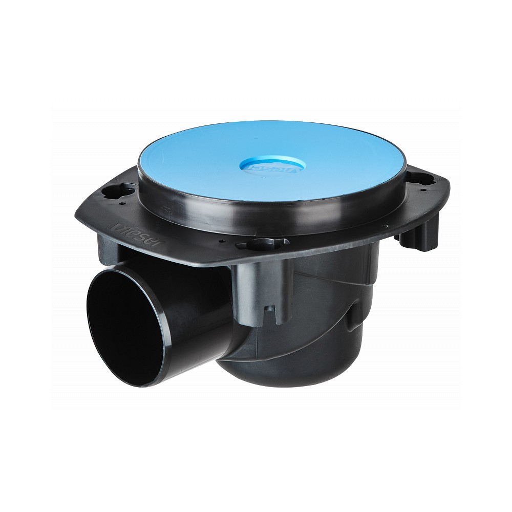
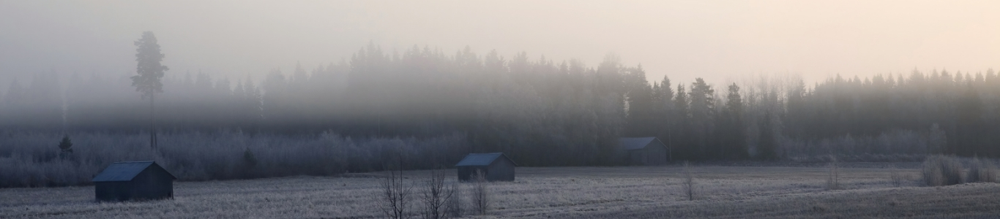
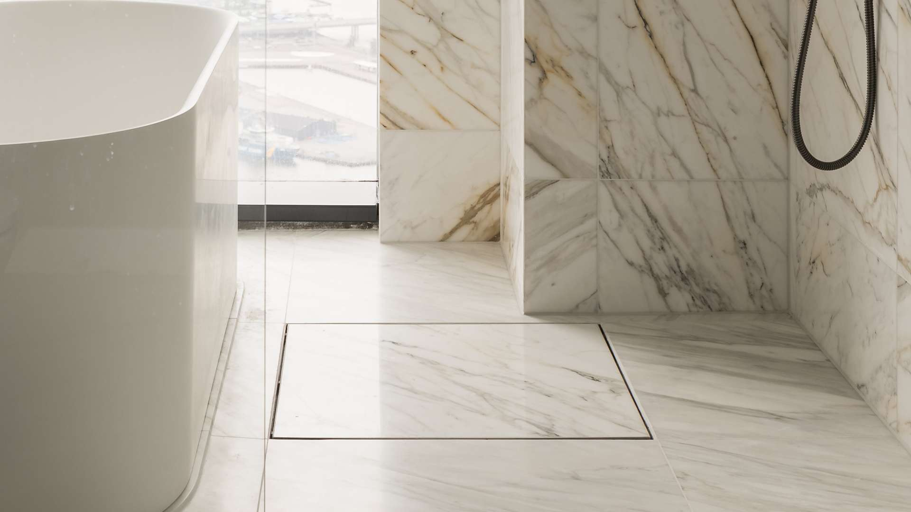
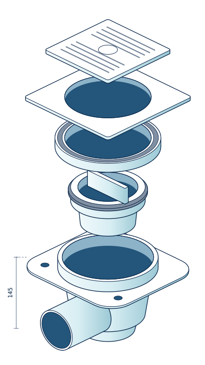

Vieser × Genero · Brändi verkossa

Simply
smart
living.
Brändikirja 2024 käännettynä verkon kieleksi. Yksi idea kantaa kaikkea: lattiataso.
Otsikoissa Nils Bold. Tässä demossa sen paikalla on Figtree, koska Nils vaatii lisenssin.

Lattiataso
Pinnan yllä huone. Pinnan alla tekniikka.
Kaivon keskilinja jatkuu lattian läpi. Yläpuolella tunnelma ja käyttö valokuvana, alapuolella se, mikä tekee Vieseristä fiksun: osat, mitat ja huolto leikkauspiirroksena.

- 1Kansilisävaruste
- 2Kehys197 × 197
- 3Kiilarengas ja tiiviste
- 4Nostokahva
- 5Harmaa huulitiiviste
- 6Vesilukko
- 7Kaivon runkoPP, Ø 167
- 8Lähtö DN75
Typografia
Yksi perhe, iso kontrasti. Leikkaukset Bold, Medium ja Regular brändikirjan mukaan.
Display 96 / 0.92
Vesilukko irtoaa kahvasta.
Otsikko 56 / 1.0
Puhdista kaivo kerran vuodessa
Ingressi 24 / 1.45
Lattiakaivo kannattaa puhdistaa, jos veden virtaus hidastuu tai kaivosta alkaa tulla hajua.
Leipä 18 / 1.65
Tarkista, että vesilukon harmaa huulitiiviste on paikoillaan, ja kostuta se esimerkiksi saippuavedellä. Kohdista vesilukko kaivoon oikeaan asentoon ja paina se alas asti.
Luvut 88 / 1.0
1,6
l/s virtaama
145
mm korkeus
DN75
lähtö
Väri
Leveys on pinta-ala. Sandstone kantaa, Planetary blue puhuu, Icy water on veden ja merkkien väri. Planetary blue on myös painikkeiden väri. Mahogany on pieni korostus: linkin alleviivaus ja piirroksen korostettu osa.
Sandstone
#F6F5ED · pohja
Planetary blue
#001E42 · teksti 15,2:1
Icy water
#BEE2E9 · vesi, merkit
Warm sand
#C7AB86
Mahogany
#993300
Planetary blue #001E42 painikkeissa, valkoinen teksti 16,6:1. Hover #0F2D57. Mahogany #993300 vain pieniin korostuksiin.
Dune ja Misty green hiusviivoihin ja tilamerkkeihin. Misty green ei riitä pienelle tekstille (4,3:1).
Aputeksti #44546A Slate grayn tilalla, koska Slate gray jää tekstinä 3,0:1:een. Tuotekuvien paneeli #EDEBE3 on apusävy, ei brändiväri.
Toiminnot
Suorakulmainen ja matala kuin brändikirjan muodot. Teksti kertoo, mitä seuraavaksi tapahtuu. Hintaa ei näytetä koskaan.
Ensisijainen. Ruotsissa sama paikka: Begär offert.

Vieser One vaakakaivo DN75
LVI 3315956 · 1,6 l/s · tyyppihyväksytty
Kuvat
Brändikirjan kolme lajia, kaikki Vieserin omista kuvista. Valokuvat aina värillisinä ja reunasta reunaan.



Periaatteet ja todisteet
Bold

Yksi rohkea sommitteluperiaate: lattiataso. Sama viiva jokaisella sivulla.
Smart

Kuva ja teksti ovat sama asia: piirros näyttää osan, josta ohje puhuu.
Timeless
Leikkauspiirros ja luonnonvalo. Sama kieli kuin Vieserin omalla piirustuspöydällä.